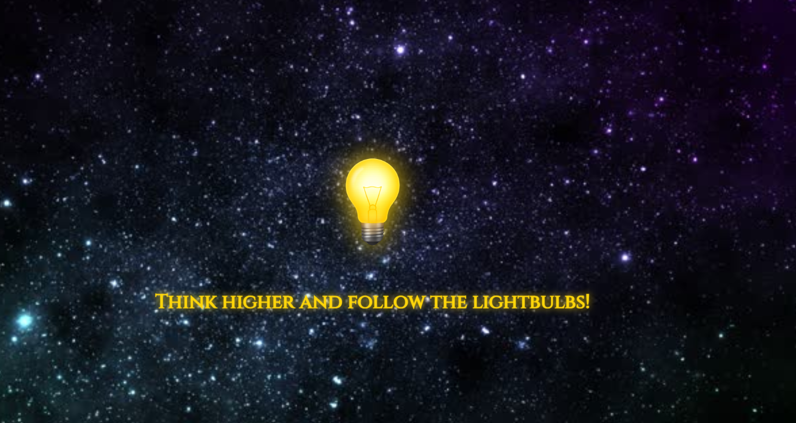

Higher Thought EnT Website
A creative web presence for a collective brand
A brand-centric website that blends ethereal design with clean navigation. This project explores custom HTML, CSS animations, and responsive layouts to deliver a unique storytelling experience.
🎯 The Challenge
Build a digital identity that feels immersive and spiritual, while remaining accessible and easy to navigate.
🛠️ The Process
- Created custom gradients and glowing effects with CSS.
- Built modular HTML pages for scalability (About, Services, Artists, etc.).
- Experimented with animation for smooth user experience.
📊 The Solution
Key Features:
- Space-themed homepage with lightbulb as symbolic “portal”
- Navigation bar rebranded with “Thought Zone”
- Embedded YouTube video to explain mission

Preview of the Higher Thought homepage (in progress)
🧰 Tools Used
- HTML, CSS, JavaScript
- Bootstrap 5
- GitHub Pages